Denoising Autoencoders And Where To Find Them
Today we’re going to train deep autoencoders and apply them to faces and similar images search.
Our new test subjects are human faces from the lfw dataset.
Import stuff
1 | import sys |
1 | import tensorflow as tf |
Using TensorFlow backend.
1 | # !!! remember to clear session/graph if you rebuild your graph to avoid out-of-memory errors !!! |
Load dataset
Dataset was downloaded for you. Relevant links (just in case):
- http://www.cs.columbia.edu/CAVE/databases/pubfig/download/lfw_attributes.txt
- http://vis-www.cs.umass.edu/lfw/lfw-deepfunneled.tgz
- http://vis-www.cs.umass.edu/lfw/lfw.tgz
1 | # we downloaded them for you, just link them here |
1 | # load images |
HBox(children=(IntProgress(value=0, max=18983), HTML(value='')))
1 | def show_image(x): |
1 | plt.title('sample images') |
X shape: (13143, 32, 32, 3)
attr shape: (13143, 73)
2997
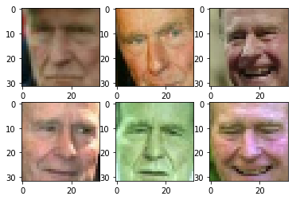
Autoencoder architecture
Let’s design autoencoder as two sequential keras models: the encoder and decoder respectively.
We will then use symbolic API to apply and train these models.

First step: PCA
Principial Component Analysis is a popular dimensionality reduction method.
Under the hood, PCA attempts to decompose object-feature matrix $X$ into two smaller matrices: $W$ and $\hat W$ minimizing _mean squared error_:
- $X \in \mathbb{R}^{n \times m}$ - object matrix (centered);
- $W \in \mathbb{R}^{m \times d}$ - matrix of direct transformation;
- $\hat{W} \in \mathbb{R}^{d \times m}$ - matrix of reverse transformation;
- $n$ samples, $m$ original dimensions and $d$ target dimensions;
In geometric terms, we want to find d axes along which most of variance occurs. The “natural” axes, if you wish.
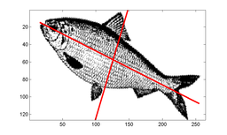
PCA can also be seen as a special case of an autoencoder.
- Encoder: X -> Dense(d units) -> code
- Decoder: code -> Dense(m units) -> X
Where Dense is a fully-connected layer with linear activaton: $f(X) = W \cdot X + \vec b $
Note: the bias term in those layers is responsible for “centering” the matrix i.e. substracting mean.
1 | def build_pca_autoencoder(img_shape, code_size): |
Meld them together into one model:
1 | s = reset_tf_session() |
Epoch 1/15
HBox(children=(IntProgress(value=0, max=11828), HTML(value='')))
Epoch 2/15
HBox(children=(IntProgress(value=0, max=11828), HTML(value='')))
Epoch 3/15
HBox(children=(IntProgress(value=0, max=11828), HTML(value='')))
Epoch 4/15
HBox(children=(IntProgress(value=0, max=11828), HTML(value='')))
Epoch 5/15
HBox(children=(IntProgress(value=0, max=11828), HTML(value='')))
Epoch 6/15
HBox(children=(IntProgress(value=0, max=11828), HTML(value='')))
Epoch 7/15
HBox(children=(IntProgress(value=0, max=11828), HTML(value='')))
Epoch 8/15
HBox(children=(IntProgress(value=0, max=11828), HTML(value='')))
Epoch 9/15
HBox(children=(IntProgress(value=0, max=11828), HTML(value='')))
Epoch 10/15
HBox(children=(IntProgress(value=0, max=11828), HTML(value='')))
Epoch 11/15
HBox(children=(IntProgress(value=0, max=11828), HTML(value='')))
Epoch 12/15
HBox(children=(IntProgress(value=0, max=11828), HTML(value='')))
Epoch 13/15
HBox(children=(IntProgress(value=0, max=11828), HTML(value='')))
Epoch 14/15
HBox(children=(IntProgress(value=0, max=11828), HTML(value='')))
Epoch 15/15
HBox(children=(IntProgress(value=0, max=11828), HTML(value='')))
<keras.callbacks.History at 0x7f769160d550>
1 | def visualize(img,encoder,decoder): |
1 | score = autoencoder.evaluate(X_test,X_test,verbose=0) |
PCA MSE: 0.00662136772442
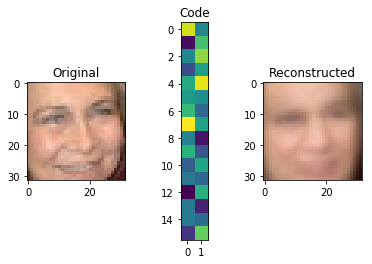
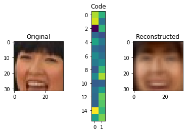
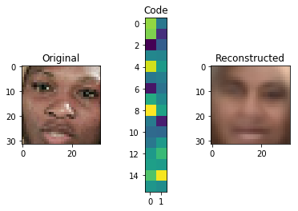
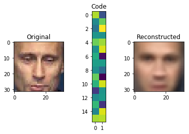
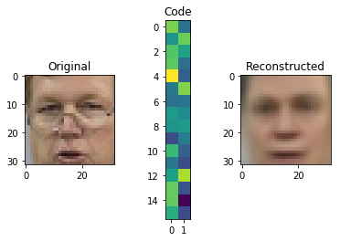
Going deeper: convolutional autoencoder
PCA is neat but surely we can do better. This time we want you to build a deep convolutional autoencoder by… stacking more layers.
Encoder
The encoder part is pretty standard, we stack convolutional and pooling layers and finish with a dense layer to get the representation of desirable size (code_size).
We recommend to use activation='elu' for all convolutional and dense layers.
We recommend to repeat (conv, pool) 4 times with kernel size (3, 3), padding='same' and the following numbers of output channels: 32, 64, 128, 256.
Remember to flatten (L.Flatten()) output before adding the last dense layer!
Decoder
For decoder we will use so-called “transpose convolution”.
Traditional convolutional layer takes a patch of an image and produces a number (patch -> number). In “transpose convolution” we want to take a number and produce a patch of an image (number -> patch). We need this layer to “undo” convolutions in encoder. We had a glimpse of it during week 3 (watch this video starting at 5:41).
Here’s how “transpose convolution” works:
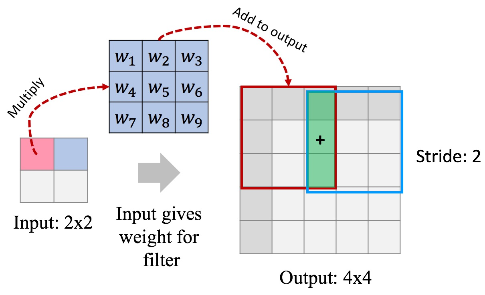
In this example we use a stride of 2 to produce 4x4 output, this way we “undo” pooling as well. Another way to think about it: we “undo” convolution with stride 2 (which is similar to conv + pool).
You can add “transpose convolution” layer in Keras like this:1
L.Conv2DTranspose(filters=?, kernel_size=(3, 3), strides=2, activation='elu', padding='same')
Our decoder starts with a dense layer to “undo” the last layer of encoder. Remember to reshape its output to “undo” L.Flatten() in encoder.
Now we’re ready to undo (conv, pool) pairs. For this we need to stack 4 L.Conv2DTranspose layers with the following numbers of output channels: 128, 64, 32, 3. Each of these layers will learn to “undo” (conv, pool) pair in encoder. For the last L.Conv2DTranspose layer use activation=None because that is our final image.
1 | # Let's play around with transpose convolution on examples first |
Transpose convolution test for img_size=2, filter_size=2:
input:
[[ 1. 2.]
[ 3. 4.]]
filter:
[[ 1. 1.]
[ 1. 1.]]
output:
[[ 1. 1. 2. 2.]
[ 1. 1. 2. 2.]
[ 3. 3. 4. 4.]
[ 3. 3. 4. 4.]]
Transpose convolution test for img_size=2, filter_size=3:
input:
[[ 1. 2.]
[ 3. 4.]]
filter:
[[ 1. 1. 1.]
[ 1. 1. 1.]
[ 1. 1. 1.]]
output:
[[ 1. 1. 3. 2.]
[ 1. 1. 3. 2.]
[ 4. 4. 10. 6.]
[ 3. 3. 7. 4.]]
Transpose convolution test for img_size=4, filter_size=2:
input:
[[ 1. 2. 3. 4.]
[ 5. 6. 7. 8.]
[ 9. 10. 11. 12.]
[ 13. 14. 15. 16.]]
filter:
[[ 1. 1.]
[ 1. 1.]]
output:
[[ 1. 1. 2. 2. 3. 3. 4. 4.]
[ 1. 1. 2. 2. 3. 3. 4. 4.]
[ 5. 5. 6. 6. 7. 7. 8. 8.]
[ 5. 5. 6. 6. 7. 7. 8. 8.]
[ 9. 9. 10. 10. 11. 11. 12. 12.]
[ 9. 9. 10. 10. 11. 11. 12. 12.]
[ 13. 13. 14. 14. 15. 15. 16. 16.]
[ 13. 13. 14. 14. 15. 15. 16. 16.]]
Transpose convolution test for img_size=4, filter_size=3:
input:
[[ 1. 2. 3. 4.]
[ 5. 6. 7. 8.]
[ 9. 10. 11. 12.]
[ 13. 14. 15. 16.]]
filter:
[[ 1. 1. 1.]
[ 1. 1. 1.]
[ 1. 1. 1.]]
output:
[[ 1. 1. 3. 2. 5. 3. 7. 4.]
[ 1. 1. 3. 2. 5. 3. 7. 4.]
[ 6. 6. 14. 8. 18. 10. 22. 12.]
[ 5. 5. 11. 6. 13. 7. 15. 8.]
[ 14. 14. 30. 16. 34. 18. 38. 20.]
[ 9. 9. 19. 10. 21. 11. 23. 12.]
[ 22. 22. 46. 24. 50. 26. 54. 28.]
[ 13. 13. 27. 14. 29. 15. 31. 16.]]
1 | def build_deep_autoencoder(img_shape, code_size): |
1 | # Check autoencoder shapes along different code_sizes |
Testing code size 1
Testing code size 8
Testing code size 32
Testing code size 128
Testing code size 512
All tests passed!
1 | # Look at encoder and decoder shapes. |
_________________________________________________________________
Layer (type) Output Shape Param #
=================================================================
input_1 (InputLayer) (None, 32, 32, 3) 0
_________________________________________________________________
conv2d_1 (Conv2D) (None, 32, 32, 32) 896
_________________________________________________________________
max_pooling2d_1 (MaxPooling2 (None, 16, 16, 32) 0
_________________________________________________________________
conv2d_2 (Conv2D) (None, 16, 16, 64) 18496
_________________________________________________________________
max_pooling2d_2 (MaxPooling2 (None, 8, 8, 64) 0
_________________________________________________________________
conv2d_3 (Conv2D) (None, 8, 8, 128) 73856
_________________________________________________________________
max_pooling2d_3 (MaxPooling2 (None, 4, 4, 128) 0
_________________________________________________________________
conv2d_4 (Conv2D) (None, 4, 4, 256) 295168
_________________________________________________________________
max_pooling2d_4 (MaxPooling2 (None, 2, 2, 256) 0
_________________________________________________________________
flatten_1 (Flatten) (None, 1024) 0
_________________________________________________________________
dense_1 (Dense) (None, 32) 32800
=================================================================
Total params: 421,216
Trainable params: 421,216
Non-trainable params: 0
_________________________________________________________________
_________________________________________________________________
Layer (type) Output Shape Param #
=================================================================
input_2 (InputLayer) (None, 32) 0
_________________________________________________________________
dense_2 (Dense) (None, 1024) 33792
_________________________________________________________________
reshape_1 (Reshape) (None, 2, 2, 256) 0
_________________________________________________________________
conv2d_transpose_1 (Conv2DTr (None, 4, 4, 128) 295040
_________________________________________________________________
conv2d_transpose_2 (Conv2DTr (None, 8, 8, 64) 73792
_________________________________________________________________
conv2d_transpose_3 (Conv2DTr (None, 16, 16, 32) 18464
_________________________________________________________________
conv2d_transpose_4 (Conv2DTr (None, 32, 32, 3) 867
=================================================================
Total params: 421,955
Trainable params: 421,955
Non-trainable params: 0
_________________________________________________________________
Convolutional autoencoder training. This will take 1 hour. You’re aiming at ~0.0056 validation MSE and ~0.0054 training MSE.
1 | s = reset_tf_session() |
1 | # we will save model checkpoints here to continue training in case of kernel death |
1 | autoencoder.fit(x=X_train, y=X_train, epochs=25, |
Epoch 1/25
HBox(children=(IntProgress(value=0, max=11828), HTML(value='')))
Model saved in autoencoder.000.hdf5
Epoch 2/25
HBox(children=(IntProgress(value=0, max=11828), HTML(value='')))
Model saved in autoencoder.001.hdf5
Epoch 3/25
HBox(children=(IntProgress(value=0, max=11828), HTML(value='')))
Model saved in autoencoder.002.hdf5
Epoch 4/25
HBox(children=(IntProgress(value=0, max=11828), HTML(value='')))
Model saved in autoencoder.003.hdf5
Epoch 5/25
HBox(children=(IntProgress(value=0, max=11828), HTML(value='')))
Model saved in autoencoder.004.hdf5
Epoch 6/25
HBox(children=(IntProgress(value=0, max=11828), HTML(value='')))
Model saved in autoencoder.005.hdf5
Epoch 7/25
HBox(children=(IntProgress(value=0, max=11828), HTML(value='')))
Model saved in autoencoder.006.hdf5
Epoch 8/25
HBox(children=(IntProgress(value=0, max=11828), HTML(value='')))
Model saved in autoencoder.007.hdf5
Epoch 9/25
HBox(children=(IntProgress(value=0, max=11828), HTML(value='')))
Model saved in autoencoder.008.hdf5
Epoch 10/25
HBox(children=(IntProgress(value=0, max=11828), HTML(value='')))
Model saved in autoencoder.009.hdf5
Epoch 11/25
HBox(children=(IntProgress(value=0, max=11828), HTML(value='')))
Model saved in autoencoder.010.hdf5
Epoch 12/25
HBox(children=(IntProgress(value=0, max=11828), HTML(value='')))
Model saved in autoencoder.011.hdf5
Epoch 13/25
HBox(children=(IntProgress(value=0, max=11828), HTML(value='')))
Model saved in autoencoder.012.hdf5
Epoch 14/25
HBox(children=(IntProgress(value=0, max=11828), HTML(value='')))
Model saved in autoencoder.013.hdf5
Epoch 15/25
HBox(children=(IntProgress(value=0, max=11828), HTML(value='')))
Model saved in autoencoder.014.hdf5
Epoch 16/25
HBox(children=(IntProgress(value=0, max=11828), HTML(value='')))
Model saved in autoencoder.015.hdf5
Epoch 17/25
HBox(children=(IntProgress(value=0, max=11828), HTML(value='')))
Model saved in autoencoder.016.hdf5
Epoch 18/25
HBox(children=(IntProgress(value=0, max=11828), HTML(value='')))
Model saved in autoencoder.017.hdf5
Epoch 19/25
HBox(children=(IntProgress(value=0, max=11828), HTML(value='')))
Model saved in autoencoder.018.hdf5
Epoch 20/25
HBox(children=(IntProgress(value=0, max=11828), HTML(value='')))
Model saved in autoencoder.019.hdf5
Epoch 21/25
HBox(children=(IntProgress(value=0, max=11828), HTML(value='')))
Model saved in autoencoder.020.hdf5
Epoch 22/25
HBox(children=(IntProgress(value=0, max=11828), HTML(value='')))
Model saved in autoencoder.021.hdf5
Epoch 23/25
HBox(children=(IntProgress(value=0, max=11828), HTML(value='')))
Model saved in autoencoder.022.hdf5
Epoch 24/25
HBox(children=(IntProgress(value=0, max=11828), HTML(value='')))
Model saved in autoencoder.023.hdf5
Epoch 25/25
HBox(children=(IntProgress(value=0, max=11828), HTML(value='')))
Model saved in autoencoder.024.hdf5
<keras.callbacks.History at 0x7f7691fe4710>
1 | reconstruction_mse = autoencoder.evaluate(X_test, X_test, verbose=0) |
Convolutional autoencoder MSE: 0.00544933940447
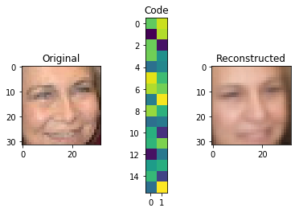
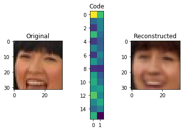
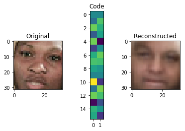
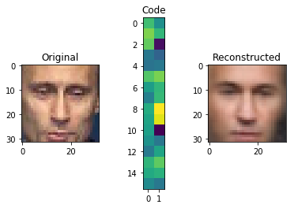
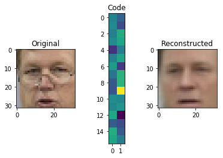
1 | # save trained weights |
1 | # restore trained weights |
0.00544933940447
0.00544933940447
Submit to Coursera
1 | from submit import submit_autoencoder |
Submitted to Coursera platform. See results on assignment page!
Optional: Denoising Autoencoder
This part is optional, it shows you one useful application of autoencoders: denoising. You can run this code and make sure denoising works :)
Let’s now turn our model into a denoising autoencoder:
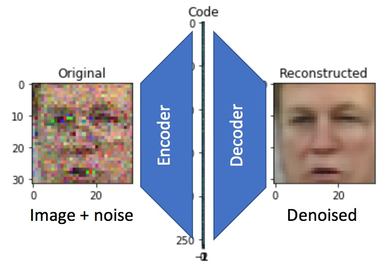
We’ll keep the model architecture, but change the way it is trained. In particular, we’ll corrupt its input data randomly with noise before each epoch.
There are many strategies to introduce noise: adding gaussian white noise, occluding with random black rectangles, etc. We will add gaussian white noise.
1 | def apply_gaussian_noise(X,sigma=0.1): |
1 | # noise tests |
1 | # test different noise scales |
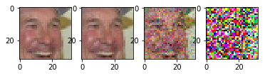
Training will take 1 hour.
1 | s = reset_tf_session() |
1 | X_test_noise = apply_gaussian_noise(X_test) |
Optional: Image retrieval with autoencoders
So we’ve just trained a network that converts image into itself imperfectly. This task is not that useful in and of itself, but it has a number of awesome side-effects. Let’s see them in action.
First thing we can do is image retrieval aka image search. We will give it an image and find similar images in latent space:
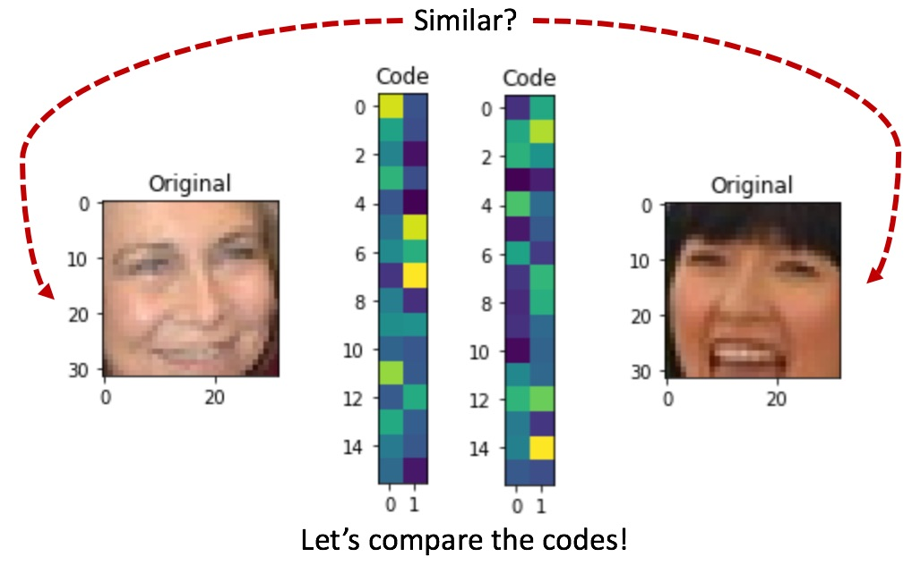
To speed up retrieval process, one should use Locality Sensitive Hashing on top of encoded vectors. This technique can narrow down the potential nearest neighbours of our image in latent space (encoder code). We will caclulate nearest neighbours in brute force way for simplicity.
1 | # restore trained encoder weights |
1 | images = X_train |
1 | from sklearn.neighbors.unsupervised import NearestNeighbors |
1 | def get_similar(image, n_neighbors=5): |
1 | def show_similar(image): |
Cherry-picked examples:
1 | # smiles |
1 | # ethnicity |
1 | # glasses |
Optional: Cheap image morphing
We can take linear combinations of image codes to produce new images with decoder.
1 | # restore trained encoder weights |
1 | for _ in range(5): |
That’s it!
Of course there’s a lot more you can do with autoencoders.
If you want to generate images from scratch, however, we recommend you our honor track on Generative Adversarial Networks or GANs.